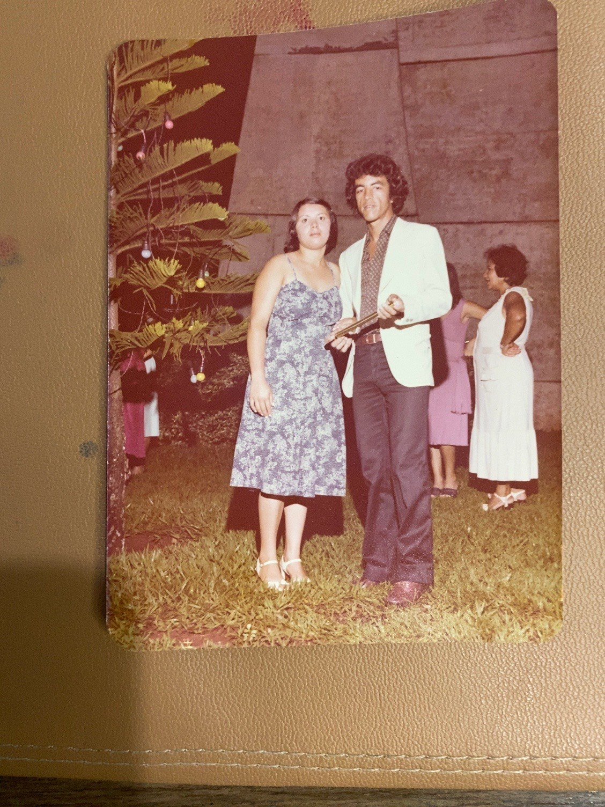
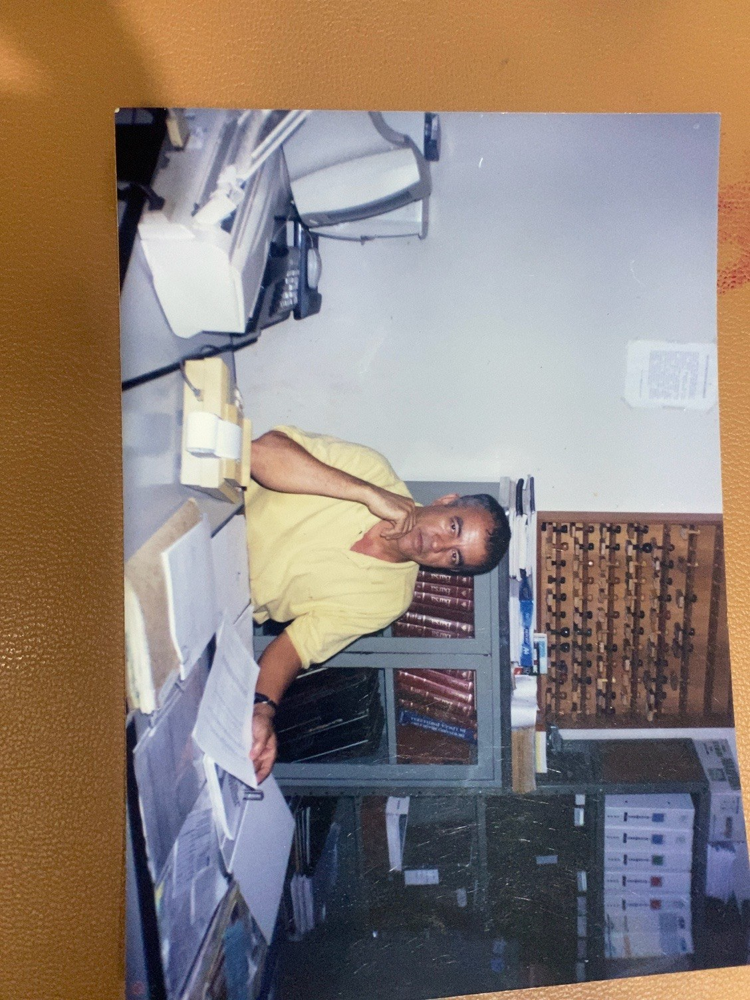

Uma trajetória construída dentro da contabilidade.

Almiro Pereira, formado em Contabilidade em 1978.
O legado
A Conplena nasceu da minha forma de enxergar a contabilidade e o papel que ela pode ter na vida de um empresário. Mas essa história começou muito antes.
Em 1978, meu pai, Almiro Pereira, formou-se em Contabilidade e iniciou sua trajetória profissional na área. Depois de adquirir experiência em escritórios de contabilidade, em 1983 abriu seu próprio escritório, onde construiu uma carreira dedicada ao atendimento de pequenos empresários.
Praticamente nasci dentro de um escritório de contabilidade.
Foi nesse ambiente que eu cresci. Enquanto muitas crianças conviviam com brinquedos, eu cresci vendo livros contábeis, documentos, empresas e empresários fazerem parte da rotina da nossa família.
A contabilidade nunca foi apenas uma profissão para mim. Ela sempre fez parte da minha vida.

Almiro Pereira em seu escritório de contabilidade, em registro da década de 1990.
Esta imagem será inserida quando o novo escritório estiver pronto.
A Conplena
Quando iniciei minha própria trajetória profissional, percebi que manter uma empresa em dia era apenas uma parte do trabalho.
O que mais me chamava atenção era ver empresários trabalhando muito e, mesmo assim, sem alcançar o resultado financeiro que esperavam.
Foi dessa inquietação que comecei a construir a Conplena. Não para substituir o empresário nas decisões. Nem para oferecer soluções prontas. Mas para compreender a realidade da empresa, entender os objetivos do empresário e conduzir a construção das condições necessárias para que ela alcance o resultado financeiro que ele busca.
A experiência construída ao longo de décadas faz parte da minha história. A Conplena é a forma como escolhi dar continuidade a esse legado, com uma visão voltada para a realidade e a evolução das pequenas empresas.